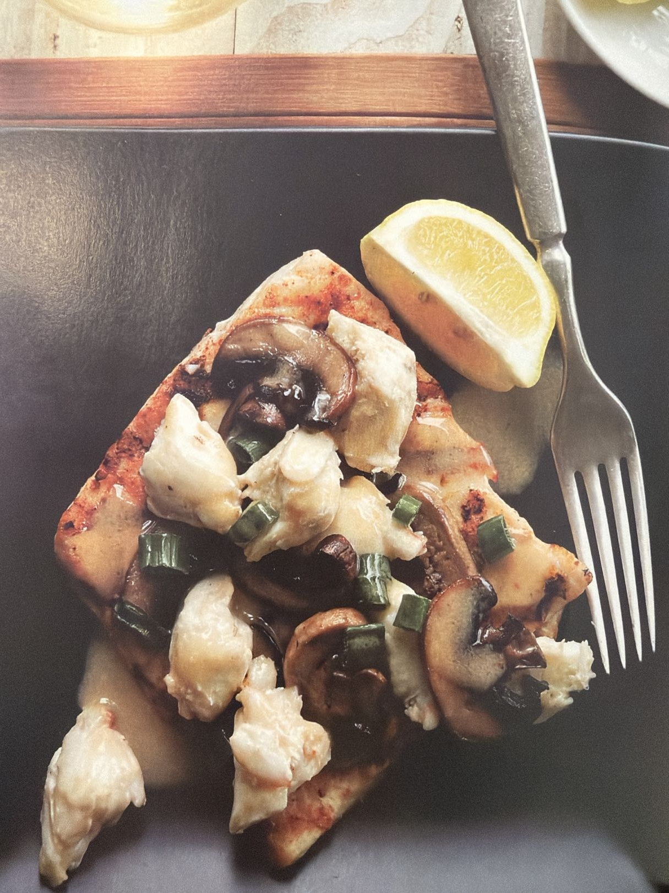

Seafood
Snapper Pontchartrain
Grilled red snapper topped with a rich Pontchartrain-style mixture of mushrooms, green onions, jumbo lump crabmeat, white wine, hot sauce, and Lemon Meunière Sauce.
Yield: 6–8 servingsCategory: SeafoodMethod: Grill + Skillet
Hero Image

Plated snapper Pontchartrain from Rob’s provided photo.
Description
This topping can also be served on top of filet mignon or tournedos of beef, but here it crowns grilled red snapper. The combination of mushrooms, crabmeat, white wine, and lemon-butter sauce gives it a classic New Orleans steakhouse-fish-house feel.
Ingredients
- 6 red snapper fillets, 6–8 oz each
- 1/2 cup No-stick Grilling Marinade for Seafood
- 1 Tbl kosher salt
- 1/4 tsp freshly ground black pepper
- 1 Tbl Clarified Butter
- 2 1/2 cups sliced button mushrooms
- 2 tsp minced garlic
- 3/4 cup sliced green onions
- 2 ounces white wine
- 8 ounces jumbo lump crabmeat
- 1 tsp hot sauce
- 3/4 cup Lemon Meunière Sauce
- Lemon wedges, for serving
- Chopped fresh parsley, for serving
Instructions
- Rub the fish fillets with the no-stick marinade and refrigerate for 20 minutes. Season the fish with the salt and black pepper.
- Prepare the grill. Place the fish on direct high heat and cook until opaque in the center, 8–10 minutes. Turn the fish once while cooking.
- Heat the Clarified Butter in a large skillet over medium high heat. Place mushrooms in skillet and sauté until tender.
- Add garlic and green onions and cook 2–3 minutes more.
- Add white wine, crabmeat, and hot sauce, and cook just long enough to heat the crab.
- Remove from heat and add the Lemon Meunière Sauce.
- Remove fillets from grill and place on serving dishes. Evenly divide topping over fish and serve.
- Garnish with lemon and fresh parsley.
Tips
- Use jumbo lump crab and fold gently so the pieces stay intact.
- Cook the fish just until opaque; red snapper dries out if overcooked.
- Have the Lemon Meunière Sauce ready before starting the topping.
Note: The Pontchartrain topping also works over filet mignon or tournedos of beef.